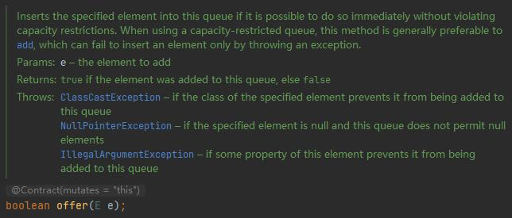
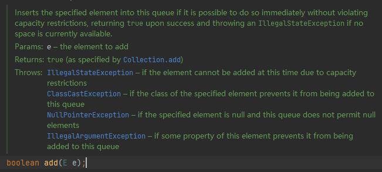
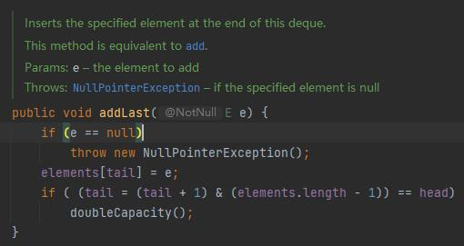
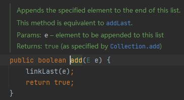
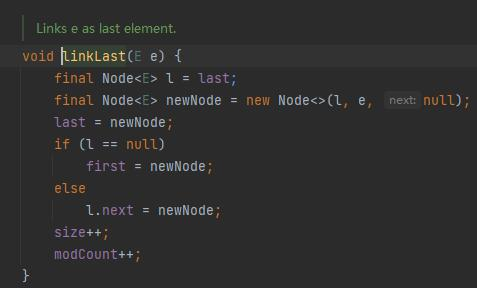
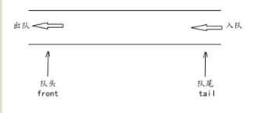

ArrayDeque和LinkedList添加null元素
异常场景
力扣102二叉树的层序遍历中，需要向队列中插入null元素，在队列的操作中，ArrayDeque内部通过数组+双索引的方式，使用&操作来定位对于元素的存放删除，LinkedList内部以链表的形式来保存集合中的元素，ArrayList明显快于LinkedList，所以我一直使用ArrayDeque作为队列的数据结构使用（栈相反），在插入null元素时 ArrayDeque报了空指针异常，而LinkedList则没有异常抛出。
ArrayDeque的offer源码


点入offer方法进入源码，发现ArrayDeque的offer()方法等效于addLast()方法，源码显示在插入元素时，会首先判断该元素是否为null，如果为null，则抛出NullPointerException

LinkedList的offer()方法源码：


可以看出LinkedList的offer()方法等效于linkedLast()方法，该方法中并未进行是否为null的判断
结论
如果遇到需要添加null的队列时，使用LinkedList，或者使用ArrayDeque时进行判断，如果为null则不添加。
Queue的常用方法：

add 增加一个元索 如果队列已满，则抛出一个IIIegaISlabEepeplian异常
remove 移除并返回队列头部的元素 如果队列为空，则抛出一个NoSuchElementException异常
element 返回队列头部的元素 如果队列为空，则抛出一个NoSuchElementException异常
offer 添加一个元素并返回true 如果队列已满，则返回false
poll 移除并返问队列头部的元素 如果队列为空，则返回null
peek 返回队列头部的元素 如果队列为空，则返回null
put 添加一个元素 如果队列满，则阻塞
take 移除并返回队列头部的元素
1、add()和offer()区别:
add()和offer()都是向队列中添加一个元素。一些队列有大小限制，因此如果想在一个满的队列中加入一个新项，调用 add() 方法就会抛出一个 unchecked 异常，而调用 offer() 方法会返回 false。因此就可以在程序中进行有效的判断！
2、poll()和remove()区别：
remove() 和 poll() 方法都是从队列中删除第一个元素。如果队列元素为空，调用remove() 的行为与 Collection 接口的版本相似会抛出异常，但是新的 poll() 方法在用空集合调用时只是返回 null。因此新的方法更适合容易出现异常条件的情况。
3、element() 和 peek() 区别：
element() 和 peek() 用于在队列的头部查询元素。与 remove() 方法类似，在队列为空时， element() 抛出一个异常，而 peek() 返回 null。
Deque常用方法：
双端队列的addFirst是左进removeFirst左出，先进后出类似于栈
addLst是右进removeFirst左出，先进先出，正常队列
addFirst(): 向队头插入元素，如果元素为空，则发生NPE(空指针异常)
addLast(): 向队尾插入元素，如果为空，则发生NPE
offerFirst(): 向队头插入元素，如果插入成功返回true，否则返回false
offerLast(): 向队尾插入元素，如果插入成功返回true，否则返回false
removeFirst(): 返回并移除队头元素，如果该元素是null，则发生NoSuchElementException
removeLast(): 返回并移除队尾元素，如果该元素是null，则发生NoSuchElementException
pollFirst(): 返回并移除队头元素，如果队列无元素，则返回null
pollLast(): 返回并移除队尾元素，如果队列无元素，则返回null
getFirst(): 获取队头元素但不移除，如果队列无元素，则发生NoSuchElementException
getLast(): 获取队尾元素但不移除，如果队列无元素，则发生NoSuchElementException
peekFirst(): 获取队头元素但不移除，如果队列无元素，则返回null
peekLast(): 获取队尾元素但不移除，如果队列无元素，则返回null
pop(): 弹出栈中元素，也就是返回并移除队头元素，等价于removeFirst()，如果队列无元素，则发生NoSuchElementException
push(): 向栈中压入元素，也就是向队头增加元素，等价于addFirst()，如果元素为null，则发生NPE，如果栈空间受到限制，则发生IllegalStateException